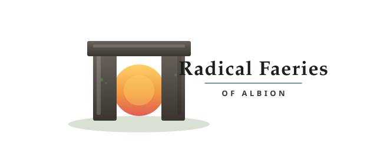
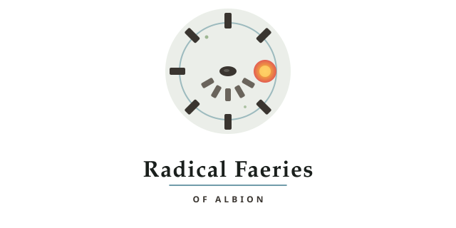
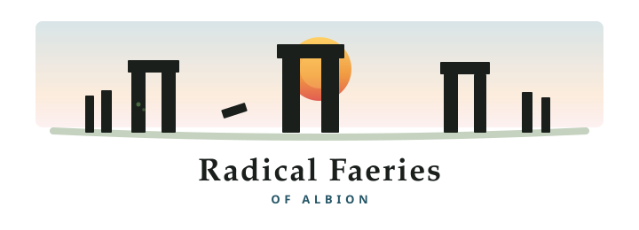

Three marks for Radical Faeries of Albion, drawn from the Sarsen Dawn palette: chalk, sarsen, dawn sun, sky, lichen.

1. Trilithon DawnA single gateway trilithon with sunrise held in the portal. Strong icon mark; reads clearly as a brand badge. File: logo-trilithon-dawn.svg

2. Stone CircleBird's-eye henge plan around a dawn hearth, open to the east. Suggests gathering and circle. File: logo-stone-circle.svg

3. Henge HorizonSilhouette row of trilithons on the chalk plain under a dawn disc. Most literally Stonehenge; good for wide headers. File: logo-henge-horizon.svg